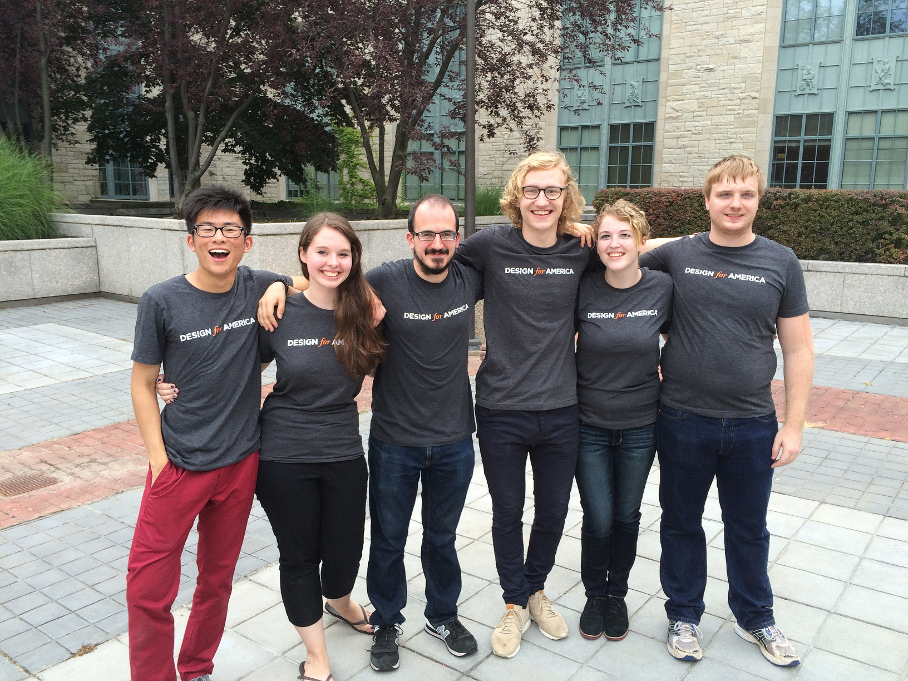
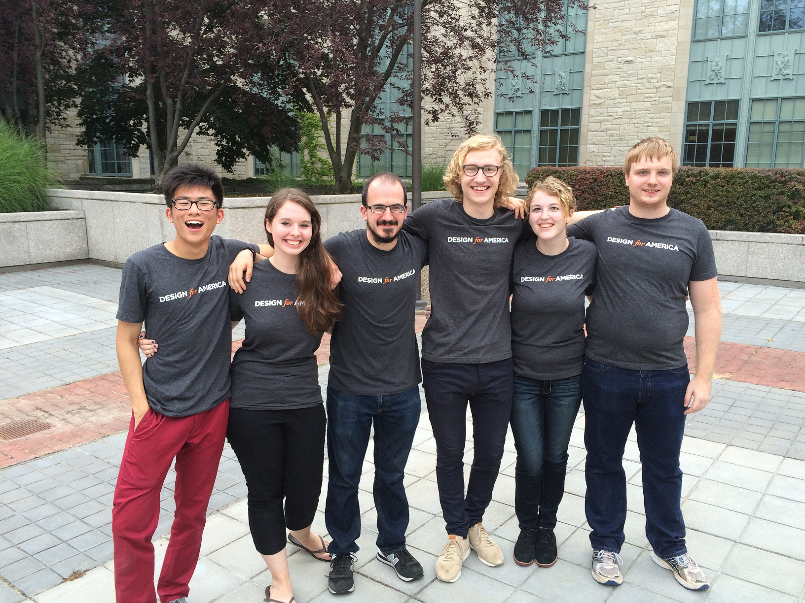

Simone Stewart
About Me
I am a student at Virginia Tech earning my B.S. in Computer Engineering and a minor in Computer Science. I will gratuate in May 2018. I began as a Mechanical Engineering major but found I was much more passionate about coding and computers. I switched my major in 2016 and have enjoyed my new program immensely. I am interested in software and testing. I also enjoy basketball, bullet journals, and roller coasters.
Design for America
Design for America is a national interdisplinary organization that focuses on human-centered design. I served as Studio Lead President from August 2015 until January 2017 when I transitioned to Studio Advisor and trained my replacements. While President, I oversaw 15 projects, including a project sponsored by Chrsler and several which partnered with the Institute for Creativity, Arts, and Technology at Virginia Tech. I also grew the Virginia Tech branch in membership and professionalism.
 


Simple Computer
One project I especially enjoyed working on was the creation of a simple computer. We used Verilog to code a function unit and write hexcodes and opcodes for instructions and turn those into machine code. We continued to use this simple computer and the memory set up to write assembly code that carried out an algorithm to take a set of numbers and return the maximum, minimum, and average values. I enjoyed using a computer at such a basic level and starting from 1s and 0s to end with a working algorithm.


simone5@vt.edu